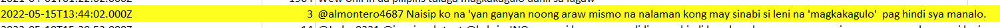
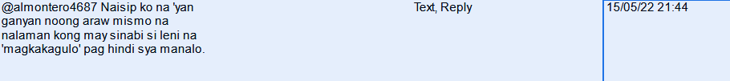
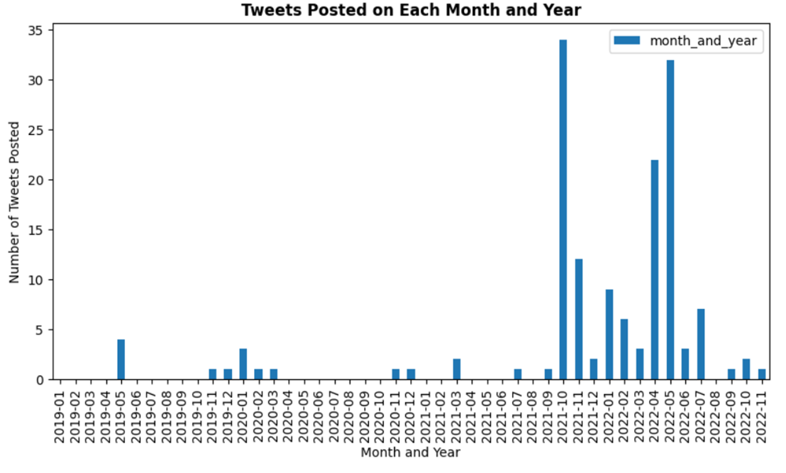

DATA EXPLORATION
Data Collection
The data was collected using the Apify actor Twitter Scraper. The scraper was configured to return at most 1000 tweets from at most 1000 accounts each. Scraping was performed in the middle of March, 2023, with the primary selection criteria being keywords related to known pieces of misinformation (i.e. misleading and/or incorrect quotes) related to Leni Robredo’s campaign. 152 tweets were collected after verifying their contents.
Search Keyword Distribution. The distribution of tweets based on search keywords used is as follows:
| Search Keyword | No. of Tweets Using the Keyword | Percent of Total |
|---|---|---|
| Leni work from home nasa bahay | 65 | 42.8 % |
| lugaw magkakagulo | 42 | 27.6 % |
| Leni drug war UN | 13 | 8.6 % |
| Leni Nababalot ng kadiliman iyong nakikita natin | 11 | 7.2 % |
| sundalo Scarborough | 6 | 3.9 % |
| Leni magkakagulo talo | 3 | 1.9 % |
| ibabalik Aquino | 3 | 1.9 % |
| Leni nuclear | 3 | 1.9 % |
| Leni resign otso diretso | 3 | 1.9 % |
| Others | 3 | 1.9 % |
| Total No. of Tweets | 152 |
Data Features. For this study, the relevant data features are:
- Date posted
- Number of likes
- Number of retweets
Data Preprocessing
Data was already preprocessed to follow a consistent formatting during data gathering.
- Ensuring formatting consistency
- Date String Before Reformatting: 
- Date String After Reformatting: 
- Ensuring no missing values
- One-hot encoding
- Sample Encoding of Account Type:
- Sample Encoding of Content Type:
- Sample Encoding of Tweet Type:
- Outlier handling
- Binning (monthly)
Unnecessary columns and features (e.g. account ID, profile picture URL, etc.) returned by the scraper were deleted manually using a Python script. Date strings from the scraper were re-formatted from YYYY-MM-DDTHH:MM:SS.XXXXZ to follow the format DD/MM/YY HH:MM, which were then preprocessed further to a pandas Datetime type with format YYYY-MM-DD HH:MM:SS.
Among the required fields, only Account bio and Location had blank values. Blank values on these fields were allowed, since these features are not needed for the problem.
The categorical fields Account type, Content type, and Tweet Type were hot encoded.


Due to one of the hypotheses focusing on engagement, engagement columns (Followers, Likes, Replies, Retweets) were the ones primarily handled for outliers. Outliers were located using the Interquartile Range method, with outliers being values below 1st Quartile - 1.5IQRs and above 3rd Quartile + 1.5IQRs, with one IQR representing the range between the 3rd and 1st Quartiles. For each feature, there were 20, 19, 5, and 26 outliers respectively. There, however, were only 3 tweets that are considered outliers for all features. To preserve data, only these 3 tweets were removed, leaving 149 tweets.
The Date posted was binned into month and year. The Monthly Frequency section shows the insights gained from binning the Date posted feature this way.
Features Distribution
The following features are skewed towards the lower end:
- Following (0-499)
- Followers (0-990)
- Likes (0-9)
- Replies (0-4)
- Retweets (0-1)
Features Correlation
From the heatmap of numerical features, it can be seen that the number of Likes and Retweets have a strong linear correlation with each other.
The heatmap only presents linear correlations, so a scatterplot matrix was used to view potential nonlinear correlations. From the scatterplot matrix, it can be seen that there are data points that affect otherwise linear relationships, such as in Followers vs Likes.
Time Series Exploration
Hourly Frequency
The hourly frequency graph shows us that it is more likely for a collected tweet to be posted from noon to midnight (note that in the exploration below, "7am to 12pm" means "7:00 am to 12:59 pm")
Tweets posted from 12mn-5am: 20
Tweets posted from 6am-11am: 40
Tweets posted from 12pm-5pm: 45
Tweets posted from 6pm-11pm: 47
Daily/Weekly Frequency
The daily frequency graph shows us that it is more likely for a collected tweet to be posted on the 8th to 15th days of the month, as well as on the 25th to 31st day of the month.
Meanwhile, analyzing which day of the week a tweet was posted shows us that it is most likely for a tweet to be posted on a Thursday. It is also interesting that it is almost equally likely for a tweet to be posted from Monday to Wednesday and Friday to Sunday.
Tweets posted from Day 1 to 7: 34
Tweets posted from Day 8 to 15: 37
Tweets posted from Day 16 to 24: 33
Tweets posted from Day 25 to 31: 48
Sum of tweets posted from Mon-Wed (0-2): 59
Sum of tweets posted from Fri-Sun (4-6): 62
Monthly Frequency
Looking purely at the months when the tweets were posted, most of them were posted in either May or October. Combining these with the year of posting provides some more insight: tweets appear to spike in October 2021, April 2022 and May 2022. These months coincide with the following events: October 2021 was when certificates of candidacy were filed, while April and May 2022 was during the last moments of election campaign season.

Features Comparison
Despite more tweets being posted on certain hours or days, this does not necessarily translate to more engagement to the tweets.
The first boxplot compares the number of likes of tweets posted before noon (<12 nn) versus after noon (>=12 nn) (dots represent outliers). On the other hand, the second boxplot compares the number of likes of tweets posted on a weekday (Monday to Friday) or on a weekend (Saturday, Sunday).
In either boxplot, there is no difference in the number of likes between groups.
End of Page